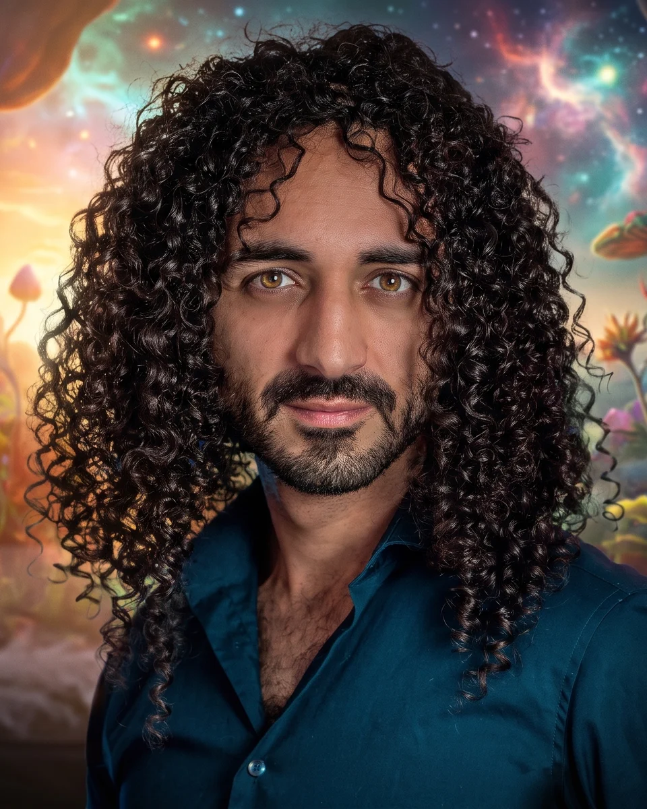

Erwache im Traum.
Luzide lernt aus deinen Nächten, wann du träumst, und erreicht dich genau dann mit dem Ton, den du tagsüber trainiert hast.
Android · Galaxy Watch 4 oder neuer · Beta ab Ende Oktober 2026
Du schläfst ein. Luzide bleibt wach.
Die Uhr am Handgelenk. Das Handy neben dir. Du legst dich hin, und Luzide wird still: Von hier an lauscht es nur noch.
Dein Herz weiß, wann du träumst.
Die Galaxy Watch misst nachts deinen Herzrhythmus, Schlag für Schlag.
Oneira, dein persönliches Modell, braucht mindestens vier Nächte, um deinen Schlaf kennenzulernen. Dann erkennt es, wann du im REM-Schlaf bist, der Phase der lebhaften Träume.
Genau dann erreichen dich ein sanfter Ton und eine Vibration. Und wenn du dich zu regen beginnst, hält Luzide inne.
Dann kommt der Ton, den du kennst.
Und plötzlich weißt du: Ich träume.
Der Ton, den du am Tag lernst.
Tagsüber übst du mit Luzide kurze Momente der Klarheit, immer mit demselben Klang. Dein Gehirn lernt: Dieser Klang bedeutet Klarheit. Nachts im Traum erkennt es ihn wieder und stellt die eine Frage: Träume ich?
In der App wählst du deinen Klang aus mehreren aus. Später kannst du auch einen eigenen Klang verwenden.
audio/klang.mp3 · PlatzhalterklangIch weiß: Ich träume.
Luzide lernt mit jeder Nacht dazu.
Was in Luzide steckt.
- 01
Traumreise
REM-Erkennung über die Galaxy Watch und sanfte Signale im Traum
- 02
Oneira, dein persönliches Modell
lernt aus deinen eigenen Nächten
- 03
Tages-Training
der Klang, der dich im Traum erinnert
- 04
Traumtagebuch
schreiben oder diktieren, direkt nach dem Aufwachen
- 05
Traumzeichen
Luzide zählt wiederkehrende Motive in deinem Traumtagebuch und schlägt sie dir als Traumzeichen vor
- 06
Reality Checks und Techniken
eine Bibliothek bewährter Methoden
- 07
Sanfter Wecker
weckt dich im leichten Schlaf
- 08
KLARHEIT
der Kurs zum luziden Träumen, für Kursteilnehmer direkt in der App
Die App.

Was Luzide anders macht.
- Signale nur, wenn du träumst, statt nach Zeitplan.
- Ein Klang, den dein Gehirn kennt, statt irgendeines Tons.
- Ein Modell, das dich kennt, statt Regler, an denen du drehst.
- Stille, sobald du dich regst.
Deine Nächte gehören dir.
Deine Traum- und Gesundheitsdaten liegen auf Servern in der EU. Keine Werbung, keine Weitergabe, kein Handel mit deinen Daten. Dein Schlafmodell wird auf deinem Handy trainiert. Du kannst jederzeit alles löschen, mit einem Tipp in der App.

Gebaut an eigenen Nächten.
Ich bin Joobin Khavand. Seit 2018 begleite ich Menschen zu mehr Klarheit, im Wachen und im Traum. Luzide habe ich gebaut, weil ich eine Nacht wollte, die mich im Traum erreicht, statt mich zu wecken. Das Modell dahinter ist an meinen eigenen Nächten entstanden, seit März 2026 fast jede Nacht mit der Uhr am Handgelenk. Jetzt soll es deine Nächte kennenlernen.
Werde einer der Ersten.
Die geschlossene Testphase beginnt Ende Oktober 2026. Ich suche eine kleine Gruppe, die 14 Nächte mit Luzide schläft und mir sagt, was sie erlebt. Es ist eine Beta: Nicht alles wird rund laufen, und deine Rückmeldung bestimmt, was als Nächstes kommt. Während der Beta ist PRO für dich frei. Wer die 14 Nächte durchzieht, bekommt zum offiziellen Start einen Monat PRO dazu.
Neuigkeiten.
Alle NeuigkeitenFragen.
Funktioniert das wirklich?
Luzide ist ein Training, kein Schalter. Das Prinzip, ein tagsüber gelerntes Signal im REM-Schlaf abzuspielen, stammt aus der Schlafforschung und heißt Targeted Lucidity Reactivation. Wie oft es bei dir zum luziden Traum führt, hängt von deiner Übung ab und von deinen Nächten. Genau das finden wir in der Beta gemeinsam heraus.
Brauche ich eine Galaxy Watch?
Für die Traumreise und das Training mit deinem Klang ja, ab Galaxy Watch 4, dazu Samsung Health auf dem Handy. Auf Samsung-Handys ist es vorinstalliert, auf anderen Android-Handys lädst du es aus dem Play Store. Tagebuch, Techniken und Reality-Check-Erinnerungen funktionieren auch nur mit dem Handy.
Kann ich die Beta auch ohne Uhr testen?
Ja. Ohne Uhr testest du Tagebuch, Techniken und Reality-Check-Erinnerungen. Das Tagestraining mit dem Klang und die Traumreise brauchen die Galaxy Watch, denn der Klang soll dich nachts genau im REM-Schlaf erreichen, und den erkennt Luzide über die Uhr.
Was passiert in den ersten Nächten?
In den ersten Nächten lauscht Luzide nur und sendet keine Signale. Oneira lernt dabei von den Schlafphasen aus Samsung Health: mindestens vier Nächte mit Samsung-Daten, bei kurzen Nächten oder viel Bewegung auch mehr. Die Lernkarte in der App zeigt dir den Stand. Sobald Oneira deine Nächte erkennt, folgen Kalibriernächte, in denen Luzide die Stärke des Signals an dich anpasst. Danach kommen die Signale im Traum.
Weckt mich das Signal auf?
Das Signal ist bewusst sanft. In drei Kalibriernächten tastet sich Luzide Stufe für Stufe an deine Schwelle heran. Danach bleibt das Signal darunter, und sobald du dich regst, hält Luzide inne.
Was erwartest du von Testern?
Mit Uhr: 14 Nächte mit Luzide schlafen (die ersten davon sind Lernnächte), tagsüber ein paar kurze Übungen mit dem Klang, morgens den Traum festhalten. Ohne Uhr: Tagebuch, Techniken und Reality-Check-Erinnerungen im Alltag nutzen. In beiden Fällen sagst du mir, was du erlebst, auch das, was nicht klappt.
Was kostet Luzide?
Die Grundfunktionen sind kostenlos. Während der Beta ist PRO für dich frei. Wer die 14 Nächte durchzieht, bekommt zum offiziellen Start einen Monat PRO dazu.
Werden meine Daten weitergegeben?
Nein. Deine Daten liegen in deinem Konto: die Gesundheits- und Traumdaten in der EU, die Kontodaten der Anmeldung in den USA. Sie gehören dir.
Ist Luzide ein Medizinprodukt?
Nein. Luzide ist ein Training für luzides Träumen und stellt keine Diagnosen.
Gibt es Luzide für das iPhone?
Noch nicht. Luzide startet auf Android.
Muss mein Handy nachts im Flugmodus sein?
Nein, Pflicht ist das nicht. Luzide empfiehlt den Flugmodus vor der Traumreise, damit keine Anrufe und Nachrichten stören. Im Flugmodus sendet dein Handy keine Mobilfunksignale; WLAN und Bluetooth bleiben aus, bis du sie wieder einschaltest. Für die Uhr braucht Luzide Bluetooth: Schalte es nach dem Flugmodus wieder ein, sonst verliert die Uhr die Verbindung und misst keinen Puls. Ob du den Flugmodus nutzt, entscheidest du selbst.
Ist luzides Träumen sicher?
Meist ja. Klarträume gehen manchmal mit Schlafparalyse oder falschem Erwachen einher, das ist meist harmlos. Wenn dich Träume oder Nächte belasten, mach eine Pause vom Training. Bei anhaltenden Schlafproblemen, belastenden Erlebnissen, Vorerkrankungen oder Medikamenten, die den Schlaf beeinflussen, sprich vor dem Training mit einer Ärztin oder einem Arzt. Luzide ist kein Medizinprodukt und ersetzt keine ärztliche Beratung.
Was passiert mit meinen Daten?
Deine Daten werden in deinem Konto bei Google Firebase gespeichert, die Gesundheits- und Traumdaten in der EU, die Kontodaten der Anmeldung in den USA. Die Erkennung deiner Schlafphasen und das Training deines persönlichen Modells laufen auf deinem Handy. Keine Werbung, kein Verkauf, keine Analyse-Dienste. Mehr steht in der Datenschutzerklärung. Du kannst dein Konto in der App jederzeit löschen.
Was passiert nach der Beta mit PRO?
Während der Beta ist PRO für dich kostenlos. Mit dem Ende der Beta endet dieser kostenlose Zugang automatisch, ohne dass du etwas tun musst und ohne dass ein Abo entsteht. Das Ende kündigen wir vorher in der App an, ebenso, wie es danach weitergeht.